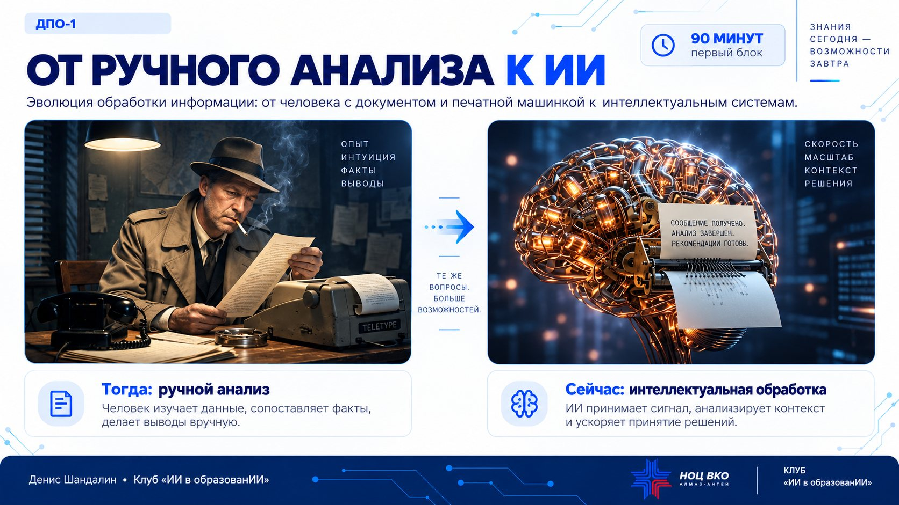

Урок 1
Основы применения искусственного интеллекта
Что такое ИИ и языковые модели, контекст, возможности и ограничения инструментов, основы грамотного запроса.
Алмаз-Антей · Клуб «ИИ в образовании»
Единая точка входа в материалы ДПО-1: презентационные страницы, практикумы, доступная раздатка и промпты.

Программа курса
Ссылки соответствуют утверждённому списку. Для материалов, размещённых в MAX, открывается канал с занятием; отдельные репозитории для них в каталог не добавляются.
Урок 1
Что такое ИИ и языковые модели, контекст, возможности и ограничения инструментов, основы грамотного запроса.
Урок 2 · практикумы 1–2
Практика выбора задач, улучшения запроса и проверки результата до его использования в работе.
Урок 3
Категории данных, подготовка информации, допустимые контуры и ответственность человека за результат.
Урок 4 · две части
Обезличивание и минимизация данных; авторское право, синтетический контент, ошибки, предвзятость и дипфейки.
Урок 5
Манипулятивные сообщения, фишинг, подмена голоса и действия при сомнительном поручении.
Урок 6 · две части
Структура рабочего запроса и методы повышения качества результата: цель, контекст, роль, ограничения, формат и последовательная доработка.
Урок 7 · две части
От технологических материалов к рабочему результату: анализ, структурирование, проверка и доработка.
Урок 8
Карточка появится в каталоге после загрузки и проверки финальной версии урока.
Быстрый доступ
Здесь собраны только материалы, для которых уже есть публичная ссылка. Остальные файлы открывайте на страницах соответствующих уроков или в MAX.